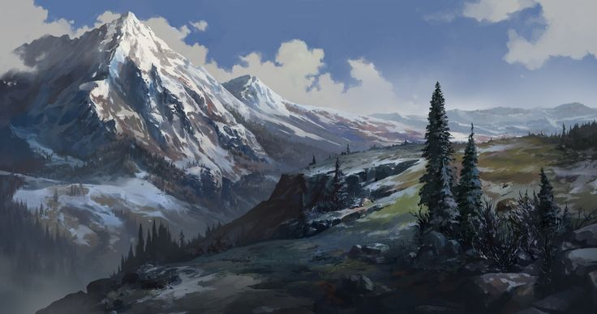
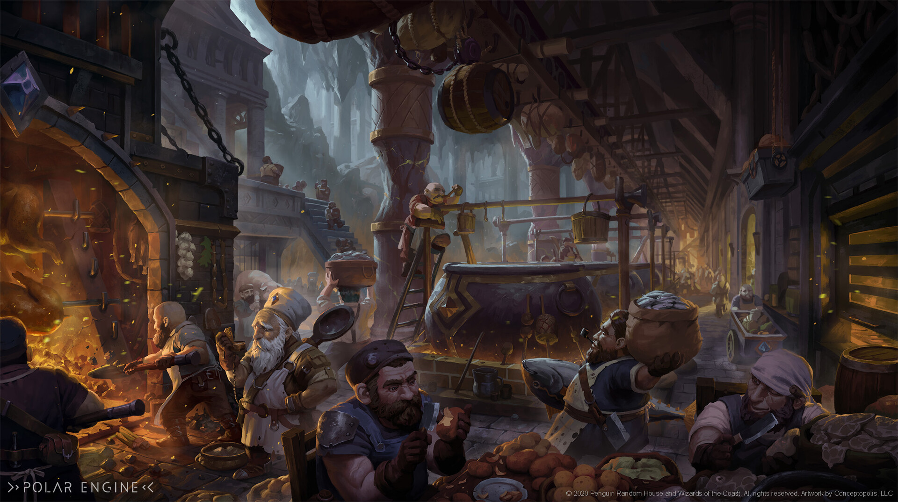
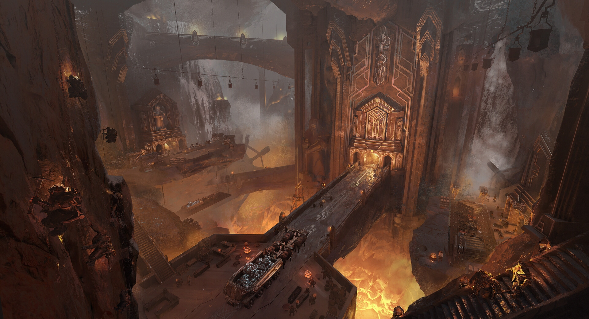

Торм, столица дворфийского народа, — это чудо инженерии, гигантская каменная чаша, вырезанная в самой плоти земли, столь массивная и монументальная, что её часто называют величайшим разломом верхнего мира. Отвесные стены гигантского кратера уходят вниз, теряясь в туманном смоге, свете жаровен и металлическом гуле, а по краям этих стен, словно карнизы в храме богов, возвышаются крепостные сооружения, здания и механизмы.

Вокруг внешних крепостных стен Торма раскинулись промышленные окраины. Эти земли усеяны временными лагерями торговцев и сборщиков руды, ресурсными пунктами, где перерабатывается и сортируется добытое с Великого Титанового Хребта, акведуками, идущими по горным пещерам, — массивными, каменными, украшенными шестернями и орнаментами, — снабжающими водой всю столицу, полевыми рынками и базарами, где торгуют кожей, рудой, металлом и редкими горными продуктами, а также загоновыми дворами для мулов и массивных баранов, обитателей высокогорий, обвешанных поклажей и стальной бронёй.

Контингент здесь — низовые ремесленники, наёмные рабочие, бродячие купцы и ищущие счастья инженеры, готовые трудиться ради права получить место в стенах Торма. Первая круговая стена, окружающая кратер Торма, внушительна по ширине. Каменные массивы с пробитыми рунами, башни со сплюснутыми вершинами, катапульты, работающие на магнитных полях, — всё здесь не просто для защиты, но и как демонстрация силы ремесла дворфов.

На стенах установлены различные балконы для арбалетчиков, укрытые рельефными фронтонами, магнитные турели, запускающие ядра из особого сплава, наблюдательные шары из зачарованного стекла, увеличивающие всё в десятки раз и безусловно нанесены огромные горельефы, изображающие древние битвы и великих предков, чьи духи, по поверьям, сейчас стоят на защите Торма. Врата на все четыре стороны украшены вырезанными барельефами королей, а в стенах встроены жилища для часовых, залы рунического наблюдения, отсековые механизмы для поднятия/опускания мостов и т.д. За этой стеной лежит сам внешний город, архитектурный шедевр и вершина инженерной логики. Всё здесь подчинено строгой симметрии и рациональности. Улицы — ровные, как лезвие топора. Кварталы — идеально распределены по функциям. Здесь царит почти абсолютный порядок: мастерские оружейников, бронников, часовых мастеров — грохочущие и источающие клубы горячего пара. Имеются также и знаменитые пивоварни с огромными медными чанами, гулкими дворами и магнолитами, фильтрующими воду. Тут и там разбросаны фабрики по сборке големов и конструкций — от почтовых доставщиков до боевых стражей. Ну и конечно, купеческие гильдии с торговыми павильонами, украшенными рельефными картами туннелей. Как в любом другом крупном городе, в Торме есть множество таверн, в которых столы вмурованы в пол, а пиво подаётся из потолка через трубы. Одной из главных достопримечательностей города является банк, вмещающий охраняемые реликтовые сейфы и механизмы-ревизоры, следящие за чистотой обменов. Здесь почти нет магии в привычном понимании, но повсюду руны — на стенах, дверях и инструментах. На каждом из четырёх направлений внешнего кольца города высится огромная статуя короля-предка, каждая из которых высотой с крепостную башню. Они держат молоты, книги, чертежи, горящие сосуды или механизмы — в зависимости от вклада конкретного индивида в становление Торма. Ближе к центру внешнего города можно встретить и духовные места, например, Залы Предков — каменные архивы и мавзолеи, украшенные монолитами, стеллами и бронзовыми надписями. Немало здесь обелисков эпох, вырезанных из полированных метеоритных пород.
Нельзя забывать про местную особенность — ходячие памятники — механизмы-големы, несущие вечный караул или выполняющие труд от лица давно усопшего героя. Многие непосвященные верят, что после смерти великий герой попадает в Ходячий Памятник, где продолжает служить Торму и королю. Кто знает, может в этом есть доля правды...?